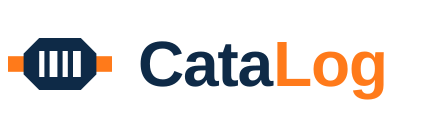
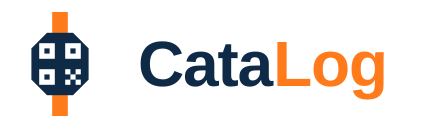
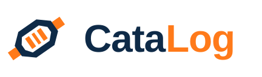
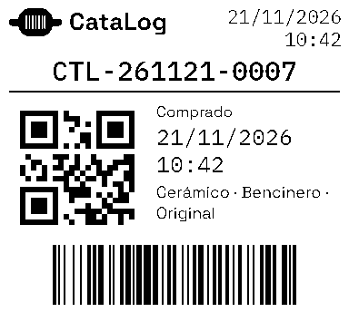

Carcasa industrial
Reconocer la pieza.


Hombros cónicos, caras planas y cuatro barras caladas. La evolución más directa del logo actual, con una silueta mecánica y menos detalle.
De la compra al registro · 22.11.2026
Tres propuestas para reconocer un catalítico, registrar su compra y encontrar su ficha. Pensadas para Android y el trabajo en terreno.
Íconos a tamaño real en píxeles CSS. Cambia la máscara para comparar su uso en Android.
Reconocer la pieza.


Hombros cónicos, caras planas y cuatro barras caladas. La evolución más directa del logo actual, con una silueta mecánica y menos detalle.
La ficha, en la pieza.


Una carcasa vertical abraza un QR simplificado. Los dos tubos conservan la lectura de catalítico y los módulos conectan con la ficha de cada compra.
Una marca en movimiento.


Un catalítico diagonal de contorno abierto encierra tres barras naranjas. El contraste entre carcasa y código da una expresión más dinámica y una estructura distinta.
Geometría que resiste la reducción.Fondos cuadrados de 64 × 64. Los tres símbolos caben en el círculo central del 66 %; Android puede aplicar su propia máscara.
Una sola tinta, sin artificios.Los SVG térmicos usan solo #000 y transparencias. No contienen imágenes, filtros, degradados ni líneas de contorno finas.
La misma familia de marca.Azul marino, naranja y gris niebla. Space Grotesk Bold declarada en todos los logos; alternativa Arial Bold si no está instalada.
Pruebas de cabecera a 384 px de ancho. Desplaza horizontalmente si tu pantalla es más estrecha.
REGISTRO DE COMPRA / CATALÍTICO
Negro #000 · calados transparentes
REGISTRO DE COMPRA / CATALÍTICO
Negro #000 · calados transparentes
REGISTRO DE COMPRA / CATALÍTICO
Negro #000 · calados transparentes
A 203 ppp, 384 puntos equivalen a un área impresa de aproximadamente 48 mm sobre papel de 58 mm. El detalle geométrico mínimo del símbolo mide 4,62 px a este ancho (2,31 px si el logo se reduce a 192 px). Las pruebas muestran el logo a ancho completo; conviene comprobar el tamaño final de cabecera en la impresora. Los códigos de los símbolos son decorativos y no escaneables.
Material original para comparar la silueta, el código y el comportamiento en el sticker.
Las propuestas introducen caras planas, hombros angulados y tubos de corte recto. El código tiene menos elementos y más espacio para conservar su lectura al reducirse.
LO QUE SE CONSERVACatalítico + identificación.
El nombre CataLog y su contraste de color.
Una versión de una tinta para imprimir.
